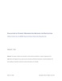
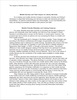
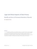

77 KB
Evaluation of Student Organization Archives for Digitization
This paper outlines the evaluation of documents provided by a student organization for digitization and ingestion by an open-access university institutional repository. Recommendations for the handling of materials and future project derivatives are included.
Stephanie Chinn. (2018). Evaluation of Student Organization Archives for Digitization.
968 KB
The Impact of Mobile Devices in Libraries
As e-readers and mobile devices increase in popularity, libraries are finding it necessary to adapt their technology and services to meet new demands and patron expectations. As patrons embrace these new technologies, so too must libraries and many are finding innumerable benefits to both patrons and staff.
Stephanie Chinn. (2017). The Impact of Mobile Devices in Libraries.
137 KB
Legal and Ethical Aspects of Data Privacy
The abilities provided by nearly infinite storage are a powerful tool for records managers in permanently retaining records and information, but the question must be asked of whether or not these records should be kept and for how long. This paper attempts to prompt thoughtfulness in assigning retention schedules based on the benefits of permanency as well as the potential drawbacks, including financial, legal and ethical aspects of the decision.
Stephanie Chinn. (2018). Legal and Ethical Aspects of Data Privacy.